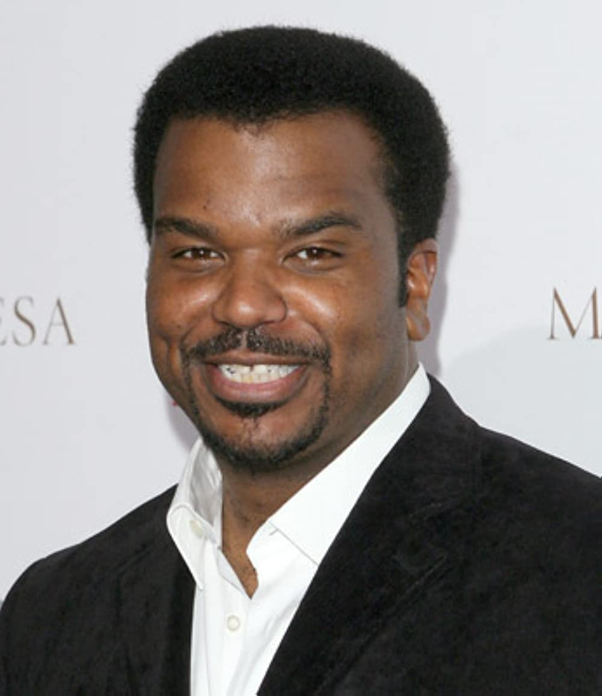
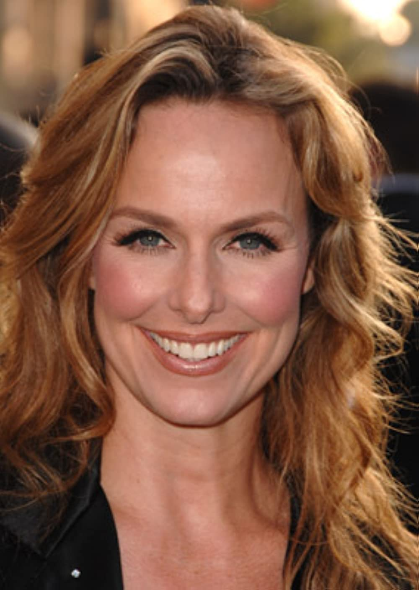

Whats the difference between a salesman and a saleswoman?
I wish you were a cat
The only difference between me and a homeless person is this job
You couldn't handle my undivided attention
I took the role to impress a receptionist, who shall remain nameless

I talk a lot, so I've learned to just tune myself out
Kevin
I have vienna sausages, and even napkins!
lol gay

Why did you choose this very old, frizzy-haired picture of me?
Florida Stanley smiles. Florida Stanley is happy to go to work. Florida Stanley is who you want on your Florida team.
Maybe it was George Howard Skub?
I'd rather she be alone than with somebody. Is that love?
Steve Carells wife
Most of my job is just managing Michael
Scissor me!

You don't even like sex! Remember? You said it feels like being tackled by a skeleton
True love
My biggest fear is that someone will distract us from getting all the shipments out on time
Main antagonist
First female branch-manager in Dunder Mifflin
I don't technically have a hearing problem
I grew up poor. I had little formal education. No real skills. I don't work especially hard, and most of my ideas are either unoriginal or total crap. And yet, I walked right into a job for which I was ill-prepared, ill-suited, and somebody else already had, and I got it. If you ask me, that's the American dream right there. Anything can happen to anyone. It's just random.
"Teet grinding"

Everyting is sex.
I'm a dick
I'm dicker